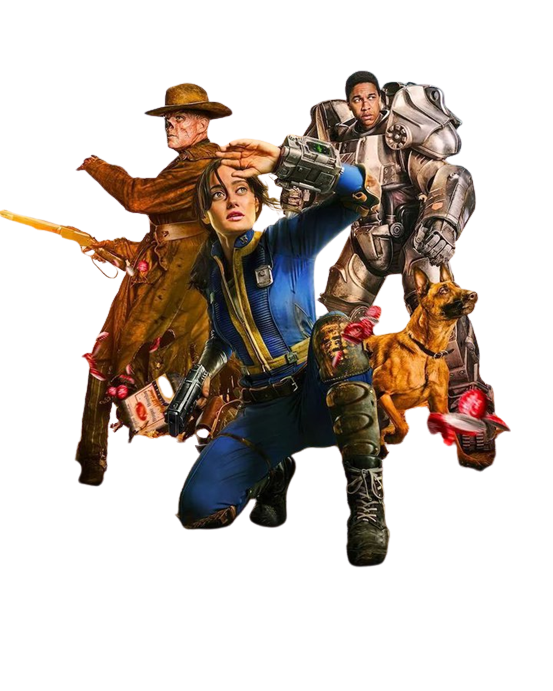

Este proyecto evaluatorio para el modulo de lenguajes de marcas del ciclo de DAM está ambientado y basado en el universo de la icónica saga de videojuegos Fallout. La narrativa traslada la estética retrofuturista de los años 50, el terror postapocalíptico nuclear y la supervivencia en el Yermo.
La historia arranca justo después del apocalipsis atómico que redujo el mundo a cenizas en el año 2077. Antes de dar el primer paso en este nuevo y peligroso mundo, el jugador debe decidir su raza y origen, lo que determinará sus estadísticas iniciales y su equipo:
> El Humano (Búnker Vault-Tech): Te despiertas en la seguridad estéril de un refugio subterráneo blindado. Cuentas con tus fuerzas intactas (100 Puntos de Vida), tu Pip-Boy sincronizado y un equipo inicial compuesto por un mapa, una pistola chatarra con 40 balas y un estimulante.
> El Necrófago (El Yermo): Abres los ojos bajo el sol abrasador y el polvo radiactivo entre las ruinas calcinadas de una ciudad. Tu cuerpo mutado cuenta con regeneración rápida (85 Puntos de Vida) y un equipo de supervivencia rústico que incluye un mapa, un rifle de palanca con 40 balas y carne de rata-topo.
